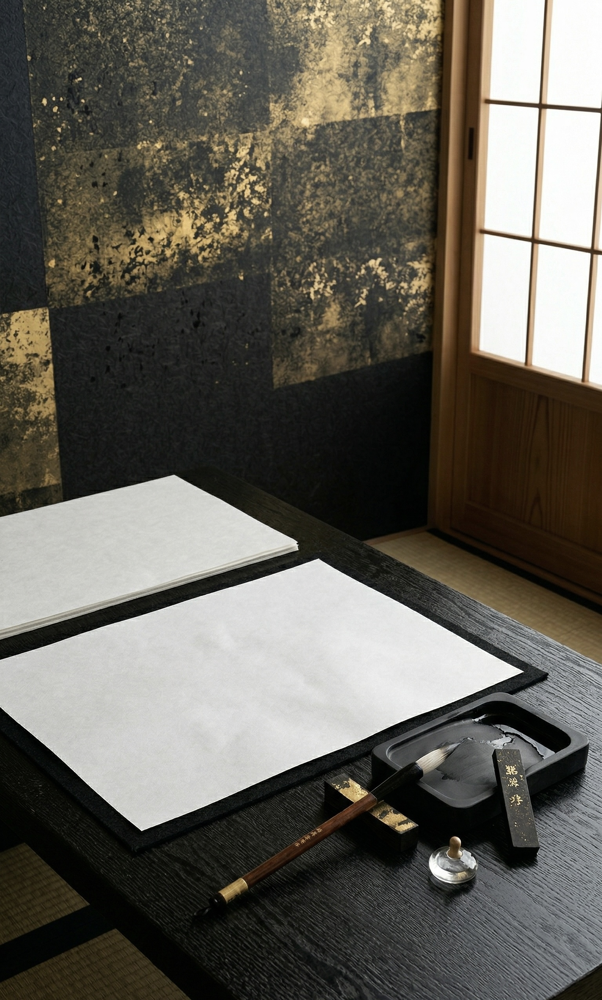
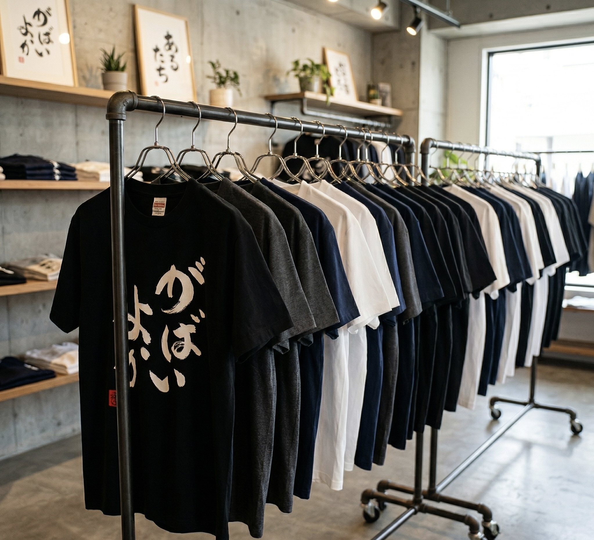
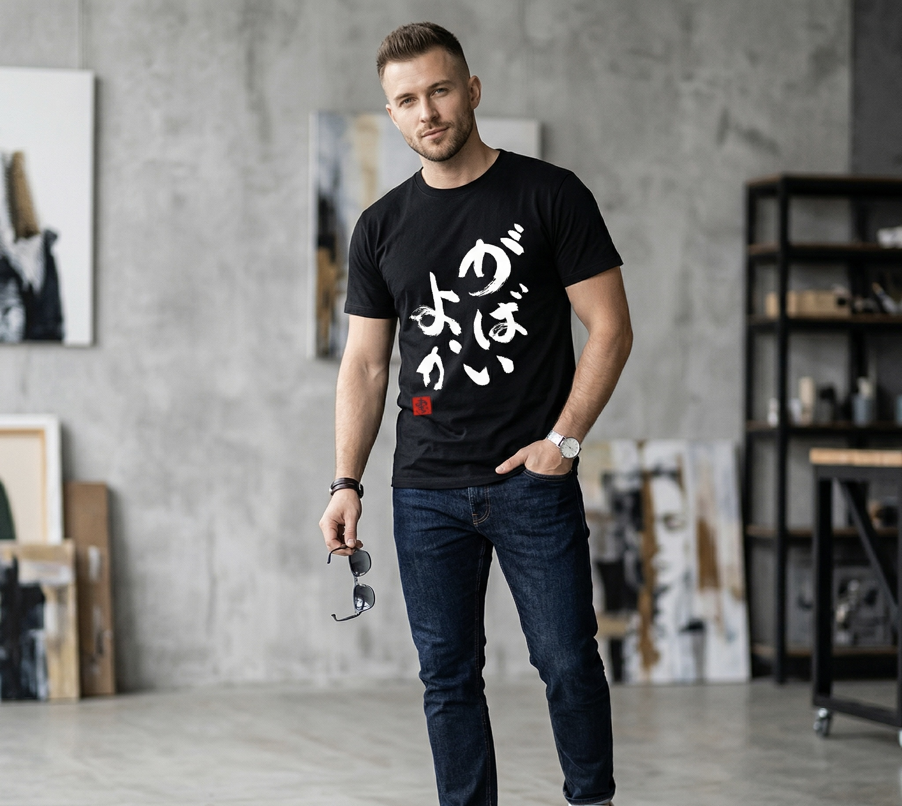
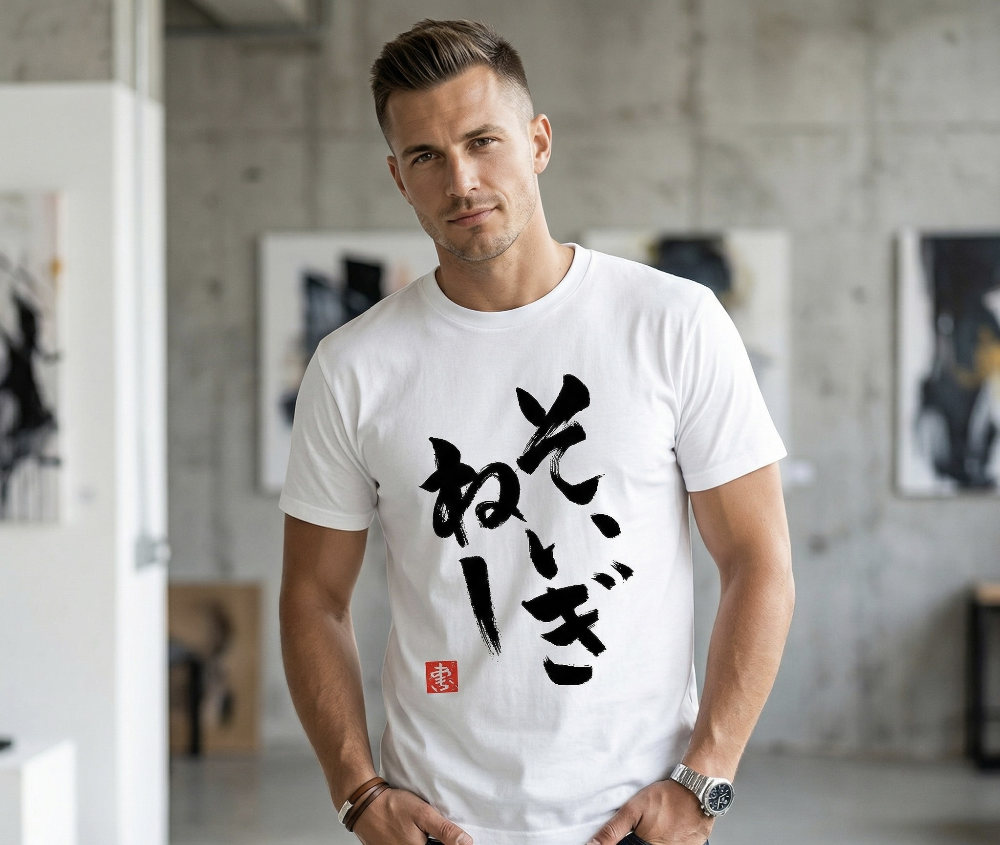
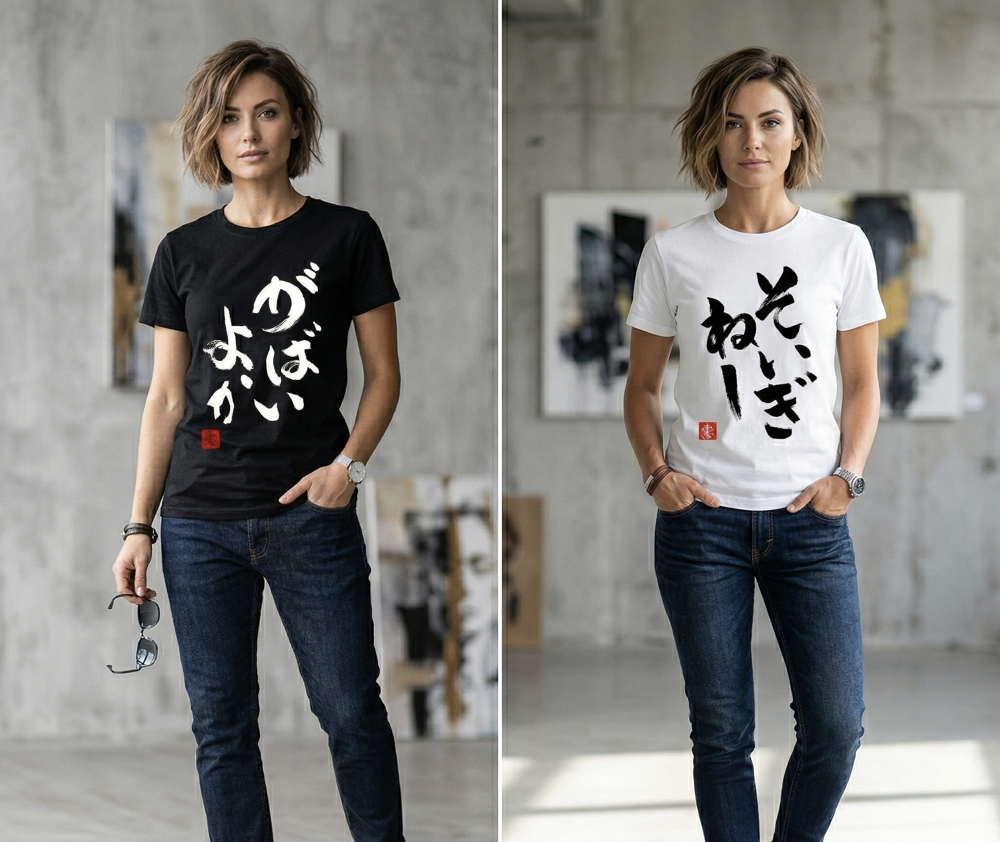
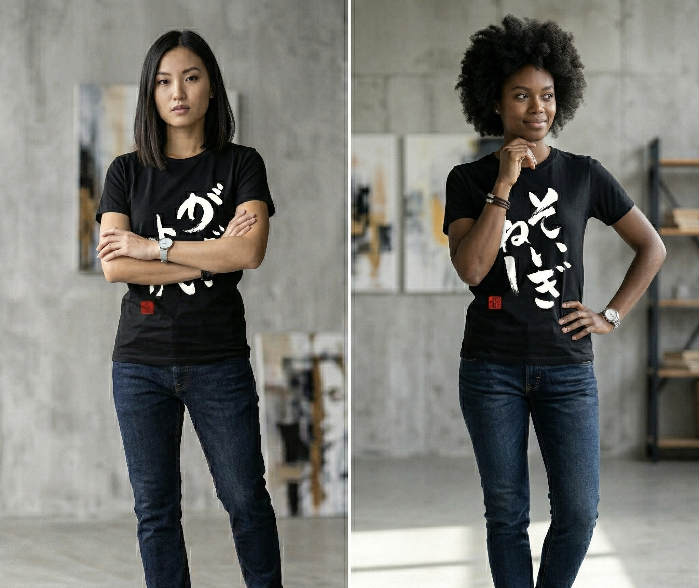

翔来会は、書道という伝統芸術を通じ、
現代に生きる人々の魂に触れることを使命とした集いです。
墨の一筆一筆に込められた「気」と「呼吸」。
余白の美しさと、力強い線の躍動感。
東洋の美意識が宿るその世界観を、日常へと解放します。
「書は人なり」——筆先に現れる線は、その人の生き様そのもの。
私たちは書道を通じ、自己と向き合い、内なる声を形にする旅を続けています。
その軌跡が、見る人の心に何かを灯せたなら、これ以上の喜びはありません。

伝統の型に宿る精神性を探求しながら、現代に生きる表現としての書を追求し続ける。
「一筆に魂を込める」という信念のもと、翔来会を設立。
翔来会の息吹を、
あなたの日常に。
書道の力強さと繊細さをデザインに落とし込んだ、
翔来会オリジナルTシャツ。
墨の躍動、余白の美しさ——
着る者を纏う一枚一枚は、アートとしての衣。
日常にさりげなく溶け込む、凛とした存在感をお届けします。
↗ syoraikai.original-goods.jp




